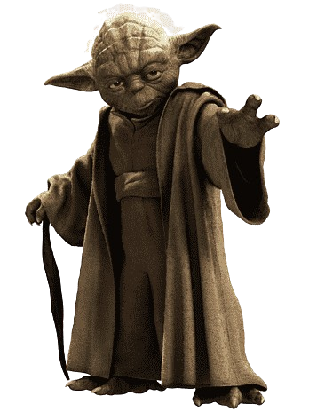

O que é SCRUM?
Se você está apenas começando, pense no Scrum como uma forma de realizar o trabalho em equipe em pequenas partes de cada vez, com experimentação contínua e ciclos de feedback ao longo do caminho para aprender e melhorar à medida que avança.
Scrum ajuda pessoas e equipes a entregar valor de forma incremental e colaborativa. Como uma estrutura ágil, o Scrum fornece estrutura suficiente para que pessoas e equipes se integrem à forma como trabalham, ao mesmo tempo que adiciona as práticas certas para otimizar suas necessidades específicas.
Bases do SCRUM
-

Comunicação Frequente
-

Inspeção
-
"Timebox"
-
Geração de Valor
-

Gestão Visual e Transparência
-
Times Pequenos Organizados
-
Planejamento Contínuo e Adaptação
-
Ritmo Sustentável
Agentes do SCRUM
-
Product Owner (PO)
• Atuando como dono do produto, esse profissional conhece aquilo que o cliente espera como resultado, sendo responsável pela definição dos recursos e passos para alcançar esse objetivo.
• É um representante do cliente e, portanto, tem a capacidade de orientar o time e controlar a lista de tarefas.
-

Scrum Master
• É um líder orientado à metodologia ágil Scrum, o que significa ter um papel de facilitador dentro da equipe. Em vez de fazer a gestão por meio de cobranças e exigências, o Scrum Master se informa sobre as dificuldades e age para que sejam contornadas da melhor maneira possível.
• Também tem a função de disseminar as boas práticas do Scrum junto ao time, garantindo a realização dos ritos com eficiência e qualidade.
-
Developer Team
• Consiste no time que vai desenvolver o projeto. De acordo com os valores adotados pelo Scrum, cada membro da equipe tem autonomia para definir ou redefinir atividades, além de corrigir falhas.
• Todos realizam suas tarefas com transparência, informando diariamente o status de seu trabalho durante o Daily Scrum.
Eventos do SCRUM
-
Planejamento
• Este evento é considerado o primeiro do Scrum, na qual a equipe do projeto começa a planejar as tarefas que serão executadas durante a sprint/projeto.
-

Daily
• A reunião Scrum ou daily é uma reunião rápida e que acontece com todos os membros da equipe em pé. Este evento tem uma duração máxima de 15 minutos.
-
Sprint
• Período de desenvolvimento que dura geralmente de 1 a 4 semanas, durante o qual a equipe trabalha nos itens selecionados do Sprint Backlog.
-

Review
• É o momento em que a equipe se reúne com o cliente para apresentar o trabalho que foi realizado, a parte do produto que foi desenvolvida.
-
Retrospectiva
• Este evento acontece logo após a reunião de revisão da sprint, assim que o cliente deixa a reunião de revisão a equipe ágil inicia a retrospectiva da sprint.
Artefatos do SCRUM
-
Backlog do Produto
O Backlog do Produto é uma lista dinâmica e priorizada de todas as funcionalidades, melhorias e correções que podem ser implementadas no produto.
É um artefato vivo, sujeito a alterações contínuas à medida que o produto evolui e novos requisitos são identificados.
-
Backlog da Sprint
Por sua vez, o Backlog da Sprint é uma seleção de itens do backlog do produto que a equipe de desenvolvimento se compromete a entregar durante uma sprint específica.
A equipe de desenvolvimento firma um compromisso para entregar os itens selecionados durante a sprint e essa seleção é baseada na capacidade da equipe e na complexidade das tarefas.
-
Incremento
Já o Incremento é o artefato final e também uma versão funcional e testável do produto que a equipe de desenvolvimento entrega ao final de cada sprint.
O Incremento deve atender aos critérios de pronto, garantindo que seja de qualidade e pronto para ser potencialmente lançado ou demonstrado aos stakeholders.
Valores do SCRUM
-
Coragem
O time Scrum precisa ter coragem para fazer a coisa certa e trabalhar em problemas difíceis.
-
Foco
Todos focam o trabalho da sprint e os objetivos do time Scrum.
-

Compromisso
As pessoas se comprometem pessoalmente a alcançar os objetivos do time Scrum.
-
Respeito
Os membros do time Scrum respeitam uns aos outros para serem pessoas capazes e independentes.
-

Abertura
O time Scrum e os seus stakeholders concordam em estarem abertos aos desafios com a execução dos trabalhos.